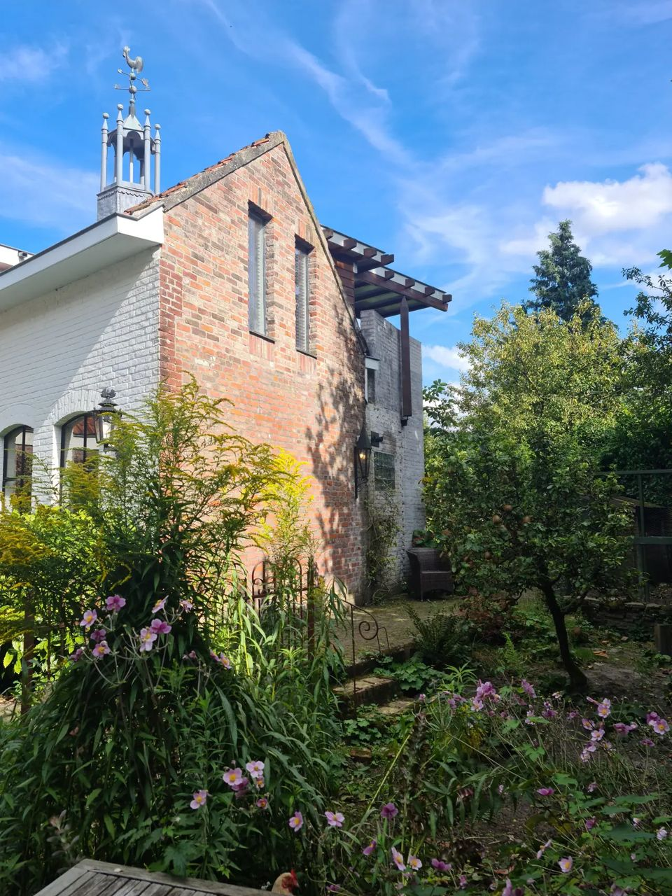
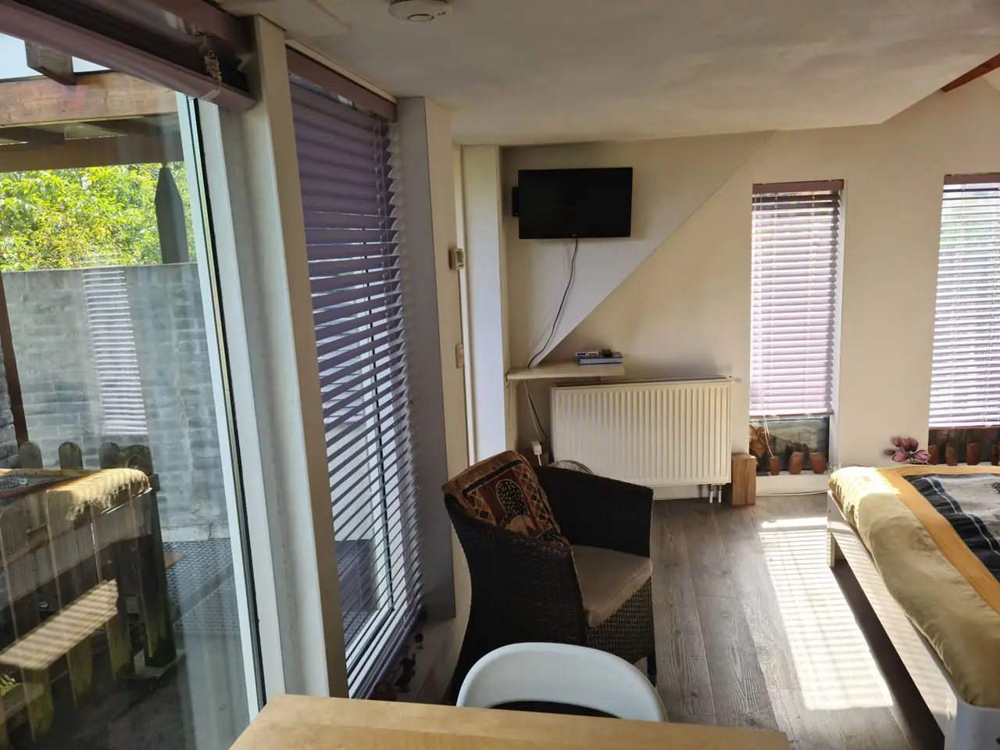
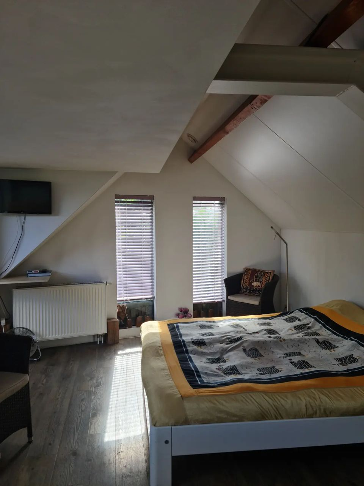
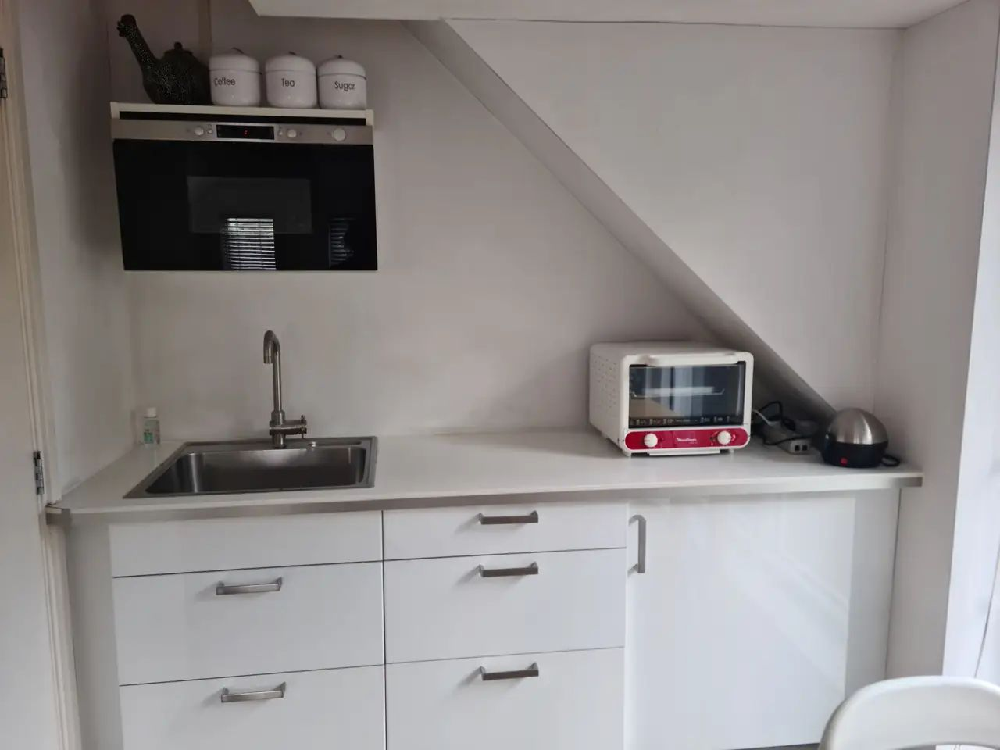
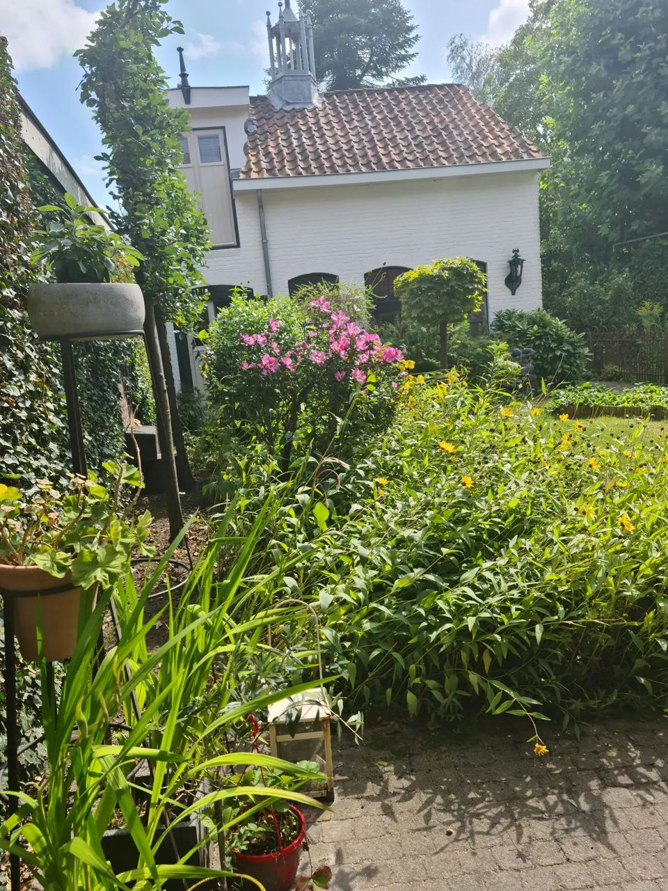

Logeren in een monumentaal tuinhuisje in Princenhage
Verscholen achter ons woonhuis, met een eigen opgang en een eigen stukje tuin. Op een paar stappen van de Haagse markt en 6 minuten fietsen van het centrum van Breda.



Het gastenverblijf
De kamer ligt op de eerste verdieping van het tuinhuisje en heeft een eigen opgang. Er is een eigen badkamer en een keukenblokje, en vanuit de kamer kijk je uit op de torens van de St. Martinus en de Johanneskerk.
Het ontbijt staat bij aankomst al voor je klaar in het gastenverblijf. Zo ontbijt je wanneer jij wilt.
uit 121 reviews van gasten
- Eigen opgang
- Privé badkamer
- Eigen keukenblok
- Inclusief ontbijt
- Tuin en terras
- Gratis wifi en parkeren
Wat gasten zeggen
Gemiddeld een 8,6 uit 121 reviews. Hygiëne en locatie scoren het hoogst: een 8,8.
- Hygiëne 8,8
- Locatie 8,8
- Service 8,7
- Prijs/kwaliteit 8,6
- Comfort 8,3
"Verblijf in tuinhuis voelt aan alsof je midden in de natuur zit, hoewel locatie centrum van het dorp is. Eigenaresse Agnes is heel gastvrij."
Annettejuni 2026"Leuke kamer met een heerlijk ontbijt op een mooi plekje dichtbij marktje. Aanrader."
Familie K., Nederlandjuli 2026"Es war eine grüne, kleine, idyllische Oase. Der Kontakt im Vorfeld war bereits sehr gut und Agnes ist super gastfreundlich."
Tine Z., Nederlandseptember 2026Reviews letterlijk overgenomen van Bedandbreakfast.nl.

Verscholen achter het woonhuis
Vanaf de straat zie je het nauwelijks. Loop je door het gangpad naar achteren, dan komt het tuinhuisje je tussen het groen heel verrassend tegemoet.
De ingang ligt in een eigen stukje tuin aan de achterkant, met een terras waar je kunt zitten en barbecueën. Privacy en rust staan bij ons hoog in het vaandel.
Het bourgondische Princenhage
Aan de rand van natuurgebied de Rith, en op 6 minuten fietsen van het centrum van Breda.
De Haagse markt
Ambachtelijke winkeltjes en restaurants: hier proef je het bourgondische Princenhage.
Centrum van Breda
Cultuur, de Nassaus, muziek, terrasjes en de singels.
Natuurgebied de Rith
Grenst aan de Pannenhoef en de oude Buisse heide. Ideaal om te wandelen en te fietsen.
Bushalte
Het treinstation ligt op 4 km. Met de auto parkeer je gratis.
Reserveren
Geef je data door, dan laten we je zo snel mogelijk weten of het tuinhuisje vrij is. Bellen of een WhatsApp sturen kan natuurlijk ook.
Liever even bellen?
Voor een boeking of een vraag kun je ons bellen of appen.